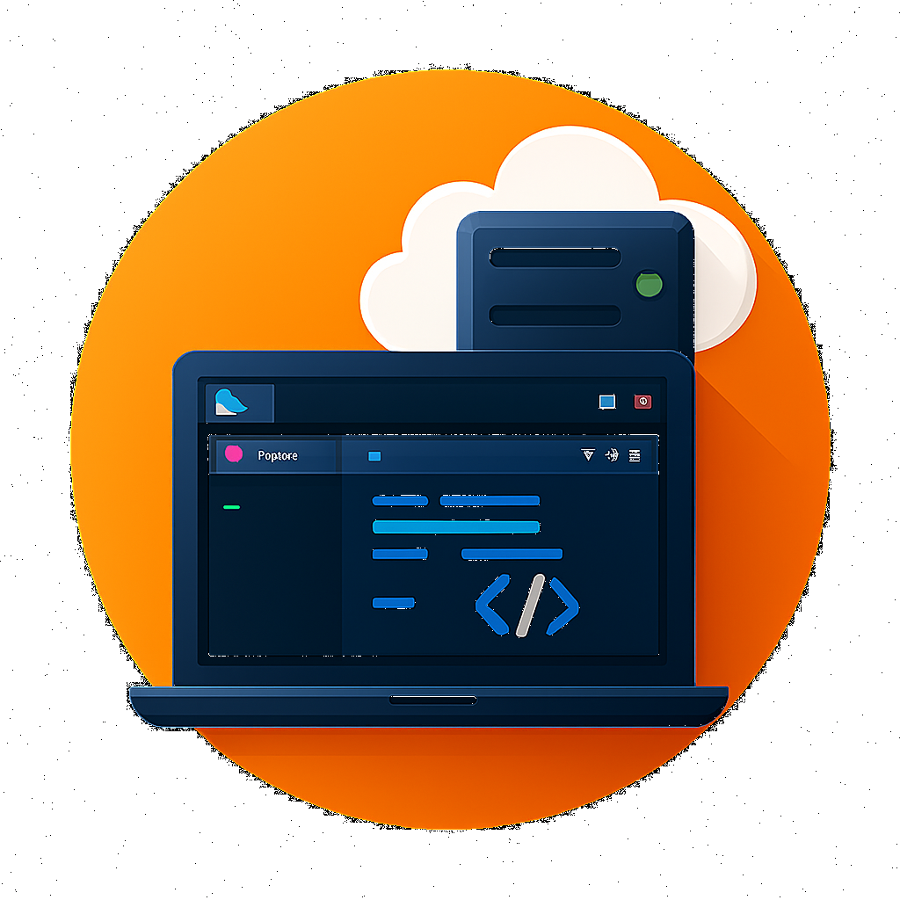
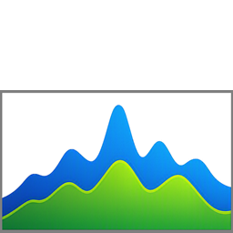

StuAuth
Authentificateur TOTP/HOTP local. Pas de cloud, pas de synchronisation, pas de suivi.

RemoteHub
Gestionnaire d'applications à distance pour Windows et Linux.
NexusUtils
Ouvre des pages web préconfigurées avec remplissage automatique des formulaires.
EchoClip
Gestionnaire de presse-papiers léger.
Shuttle
Espace de travail SSH moderne avec terminal, SFTP, tunneling et monitoring.
Tux Whisperer
Un compagnon pour ton Mac.

Keyes IOT Home Enhanced
Version dérivée pour Android 7.0.0 et plus.
Echo
Compagnon d'écran personnalisable en WPF C#.

QtLingo
Traducteur automatique pour fichiers Qt .ts.
Générateur de QRCode
Générateur de QRCode en CLI.
PatchRDP
Restaure l'accès au lecteur de carte à puce pour RDP.

System Monitor
Gestionnaire de tâche pour windows et Linux